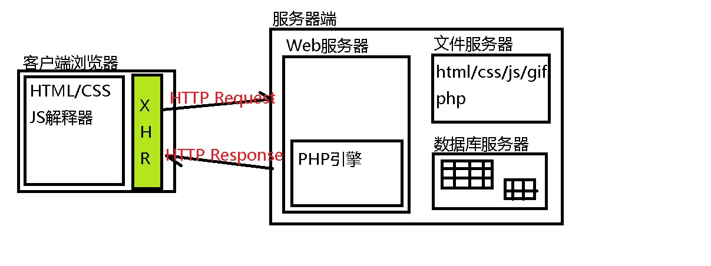
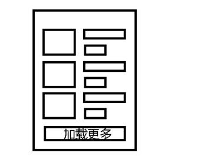

复习：
数据库服务器：
(1)常用SQL语句
(2)PHP连接数据库服务器的步骤
$conn = mysqli_connect('127.0.0.1', 'root','','db',3306);
$result = mysqli_query($conn, $sql);
Web服务器：
静态Web服务器：HTML/CSS/JS/GIF/SWF...
动态Web服务器：Apache+PHP引擎 string/array/foreach
HTTP协议：
客户端向服务器发送-请求消息：
POST /day05/5.html HTTP/1.1
Host: http://www.baidu.com/
Connection: keep-alive
User-Agent: xxx
Content-Type: application/x-www-form-urlencoded
Content-Length: 25
uname=tom&age=20&pno=1110
服务器向客户端发送-响应消息：
HTTP/1.1 200 OK
Server: Apache httpd
Last-Modified: Thu, 12 May 2016 01:23:27 GMT
Content-Type: text/html
Cache-Control: max-age=3600
<html><body>.....</body></html>
浏览器客户端可以向Web服务器发起的请求的种类：
(1)同步请求：地址栏写url、超链接、表单提交、JS页面......
(2)异步请求：AJAX
AJAX技术用于向服务器发起异步HTTP请求消息，接收服务器返回的响应消息。

原生AJAX请求的步骤：
(1)创建XHR对象
var xhr = new XMLHttpRequest( );
(2)监听XHR对象的状态改变
xhr.onreadystatechange = function( ){
if(xhr.readyState===4){
//处理响应消息主体： xhr.responseText
}
}
(3)打开到服务器的连接
xhr.open(method, url, true);
(4) 发送请求消息
xhr.send( null/请求主体 );
1.使用XHR发起GET请求
//////1
var xhr = new XMLHttpRequest();
//////2
xhr.onreadystatechange = function(){
if(xhr.readyState===4){
if(xhr.status===200){ doResponse(xhr.responseText) }
else { alert('响应完成但存在问题') }
}
}
/////3
xhr.open('GET', 'xx.php?k=v&k=v&k=v', true);
/////4
xhr.send( null );
2.使用XHR发起POST请求
//////1
var xhr = new XMLHttpRequest();
//////2
xhr.onreadystatechange = function(){
if(xhr.readyState===4){
if(xhr.status===200){ doResponse(xhr.responseText) }
else { alert('响应完成但存在问题') }
}
}
/////3
xhr.open('POST', 'xx.php', true);
/////3.5
xhr.setRequestHeader('Content-Type', 'application/x-www-form-urlencoded');
/////4
xhr.send( 'k=v&k=v&k=v' );
同步的HTTP请求，服务器可能给出的响应消息类型：
text/html（完整的HTML文件）、text/css、application/javascript、image/jpeg ....
异步的HTTP请求，服务器一般仅限于如下的响应消息类型：
text/plain、text/html（片段）、application/javascript、application/xml、application/json
3.使用XHR接收响应消息——text/plain
服务器端(PHP)：
header('Content-Type: text/plain');
echo 'cunzai';
客户端(JS)：
//1//2 if(xhr.responseText==='cunzai'){ span.innerHTML='已占用' }
//3//4
4.使用XHR接收响应消息——text/html
演示：仿写Google Suggest
服务器端（PHP）：
header('Content-Type: text/html');
echo '<li>Ada</li><li>Pascal</li>'; //不是完整的HTML
客户端（JS）；
//1 //2 element.innerHTML = xhr.responseText;
//3 //4
5.使用XHR接收响应消息——application/javascript
演示：实现网页的国际化(i18n)-根据浏览器首选语言的不同，向客户端返回不同的JavaScript脚本内容。
internationalization
服务器端（PHP）：
header('Content-Type: application/javascript');
echo 'alert(123)';
客户端（JS）：
//1 //2 eval( xhr.responseText );
//3 //4
6.思考场景：

每次异步请求，服务器应该返回字符串，其中描述多个商品的信息，而每个商品又具备多个属性——对象/对象的数组/多维数组。
PHP： $arr = [ [], [], [] ]; echo $arr; //PHP中数组不能输出
JS： var arr = new Array( ); JS中的数组和PHP中的数组不兼容！
HTTP协议规定：请求主体和响应主体数据都是字符串！该场景中：
PHP数组 => PHP字符串 => HTTP响应 => JS字符串 =>挂载到DOM
"鱼香肉丝303.jpg京酱肉丝204.jpg青椒肉丝25104.jpg"
"鱼香肉丝@30@3.jpg#京酱肉丝@20@4.jpg#青椒肉丝@25@104.jpg"
"鱼香肉丝@TARENA@30@3.jpg#京酱肉丝#2@20@4.jpg#青椒肉丝@25@104.jpg"
需要一种字符串格式规范，很容易阅读，没有歧义，被各种语言所处理：
(1)XML字符串格式 (2)JSON字符串格式
行业通用的字符串格式——XML格式
HTML-描述网页内容 XML-是一种字符串格式，用于描述数据
XML字符串的格式要求：
(1)有且只有一个根标签
(2)标签有开始就必须有结束
(3)标签可以有属性，必须有值，值必需用单引号或双引号
(4)标签可以有子标签，可以嵌套
行业通用的字符串格式——JSON格式
7.使用XHR接收响应消息——application/xml —— 了解
演示：点击“加载更多”按钮，异步请求获取更多的菜品信息
服务器端（PHP）：
header('Content-Type: application/xml');
echo '<?xml version="1.0" encoding="UTF-8" ?>';
echo '<dishList>';
echo '</dishList>'
客户端（JS）：
//1 //2 var xmlDocument = xhr.responseXML; 继续使用核心DOM方法操作XML DOM树
//3 //4
3.使用XHR接收响应消息——application/json —— 重点
待续.......................
1602A班 - 练习内容：异步加载页头和页尾
描述：
一个项目中的很多页面往往有完全相同的页头（如导航条）和页尾（如版权声明条），如果每个HTML文件都编写一份的话，不便于后期的修改和维护。可以把页头（HTML片段）和页尾(HTML片段)单独提取在一个.php文件中，其它所有的页面只包含一个空的div，待加载完成后，再异步请求页头和页尾的HTML片段内容。即：
<body>
<div id="header">页头加载中，请稍后...</div>
<div id="main">这里是主体内容</div>
<div id="footer">页尾加载中，请稍后...</div>
</body>